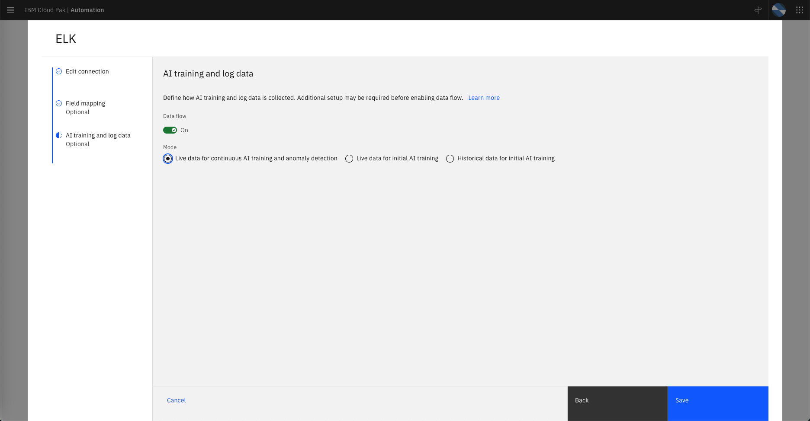

Log Anomaly Inference
Recap
Lets recap what we have done so far:
-
We have defined an integration to a Log Aggregator (EFK) that received historical application logs for a "normal" day of operations of a sample application called qotd.
-
We have defined an integration to Instana which is observing the environment where the sample qotd application is running and we have pulled every resource topology information related to this application into CP4WAIOps.
-
We have enabled one CP4WAIOps policy to create Stories.
-
We have created a log anomaly model by training on one day of "normal" log data from the qotd application. We have deployed this model to be ready for inference.
Start Log Anomaly Inference on Real-Time Logs
Now that our log anomaly trained model is successfully deployed, its ready to start doing log anomaly inference. That is, "scan" logs coming in real time from the sample application qotd and create alerts when the real time logs deviate from what is considered "normal" in the trained model. The final important point here is that, during the Lab execution, we are injecting real time anomalies into the sample application qotd, for example we are shutting down API services, icreasing service responce latency, etc. This concept is similar to what the IT Ops team at Netflix call Chaos Monkey. These anomalies will be detected by the CP4WAIOps and you will see the new alerts and stories created.
We are going to modify our integration with the log aggregator to start consuming real-time logs instead historical logs as we did previosuly.
-
From the Home page, under
Overviewclik onData and tool connectionson the left side of the page. -
Click on the
ELKconnection type. -
Click on the
EFK for QOTDconnection definition. -
Click the
Nextbutton twice to arrive to theAI training and log datapage. -
In the
AI training and log datapage:-
Make sure the Data flow is set to
On. -
Choose
Live data for continuous AI training and anomaly detectionas the option for training mode.
-
-
The
AI training and log datapage should look like the screenshot below:

- Finally click on the
Savebutton.
After saving the configuration, make sure the ELK integration page shows the Data Flow Status as Running as shown below:

Verify Incident Story
After deploying the log anomaly model and enabling real-time log consumption, we need to wait a few minutes to see the new alerts and stories being created.
-
From the Home page, under
Overviewclik onStories and alertson the left side of the page. -
On the Stories tab, make sure you see one or more stories created. Confirm that the story has been recently created. If you don't see any stories, just wait a few minutes. As we mentioned before during the definition of the terms, from an IT Operations point of view we have
Eventsthat triggerAlertsthat trigger the creation of storiesStories. -
Alerts tab: Click on the Alerts tab. Here you will see one or more alerts. These are the Log Anomaly alerts that were created by the Log Anomaly model we just deployed. They were created because the real-time logs shown patterns that are not considered "normal" by the trained model.
- Click on the alert summary to explore the alert details on the right of the page.
- On the Alert details under Properties review the values of the different properties.
- Look at the value of the property
eventCount, this is the number of events that were aggregated into a single Alert.
-
Stories tab: Click back on the Stories tab, these are the stories that were created based on the alerts that you just saw before. In a real production environment, a story can group and correlate different but related alerts into a single page. For example, lets imagine that the storage of a key application database goes down. In this scenario, we could have alerts from the database monitoring platformm, log anomaly alerts from the APIs that use the database and web page response alerts that shows database data. All these three alerts will be combined into a single story in order to help the IT Operations personnel find the root cause the the incident.
- Click on the story Description to look at the story details.
- On the left side, we see the Top alerts that triggered this story. These alerts are ranked by probable cause showing the top one as the most probable root cause of the overall incident.
- In the middle of the page, we see topology information that was provided by Instana with the problematic resource highlighted.
- The top right side of the page shows the StoryID, the story owner (Unassigned) and the priority.
- The change story settings button on the top right allow us to change the priority, the status and assignee.
- The Alerts tab shows only the alerts related to these particular story.
- The Topology tab shows the overall topology where this incident happen (NOTE that currently this tab is not showing any topology. The overall topology can be seen from Home -> Resource management -> qotd)
THIS IS THE END OF THE LAB